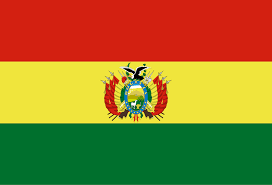
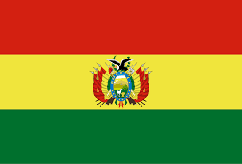

About Me
My Name is Andres Samir Simon, I was born in La Paz, Bolivia, I'm 28 years old, I love to learn about the Computers and all about Tecnologic. I love to play videogames and ear music
La Paz, Bolivia


Bolivia is a landlocked country located in the heart of South America. It is known for its diverse geography that includes the Andes Mountains, the Amazon rainforest, and the Altiplano plateau. Bolivia is rich in cultural heritage, with over 30 official languages and strong indigenous traditions. It is famous for its salt flats, colorful festivals, and natural resources.